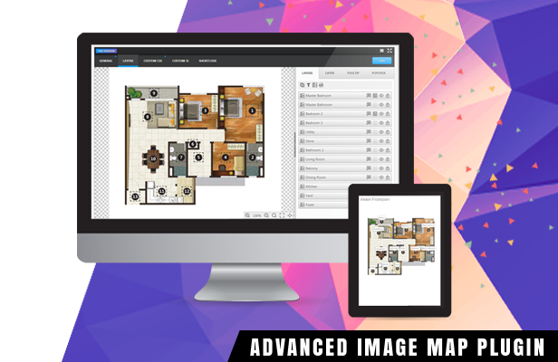

VISION INTERACTIVE
CREATE ENGAGING VISUAL STORY IN SECONDS
# ABOUT
Vision Interactive is a lightweight and rich-feature plugin helps you enhance images with additional information and links. With this plugin you are able to easily annotate images with text, shapes and icons, draw attention to areas and features on images. You can then use them in posts that empower publishers and bloggers to create more engaging content. It provides an easy way for you to convert a static image into the online interactive media brochures or booklets, image maps, immersive storytelling in seconds. The plugin can be deployed easily and runs on all modern browsers and mobile devices.

# FEATURES

Markers - add images, links, text or svg objects
Tooltips - small boxes for tiny information
Popovers - pop-up boxes for large amounts of info
Smart - tooltips & popovers can occupy the best position
Responsive - automatically adjust elements to image size
Animations - tooltips have over 100 show/hide effects
Powerful Interface - many options & capabilities
AJAX saving - save your config without page reloading
JSON config - the config is served from the filesystem instead of the database for better performance
Code editors - add extra css styles or js code with syntax highlighting
Customization - create you own theme
Help via Email
# DEMO


# HOW TO USE
WORDPRESS INSTALLATION INSTRUCTIONS
- Upload the entire vision-pro folder to the /wp-content/plugins/ directory.
- Activate the plugin through the Plugins menu in WordPress admin.
- Create a new vision item via builder, then use [vision id=”123″] shortcode to publish your visual story into any page or post.